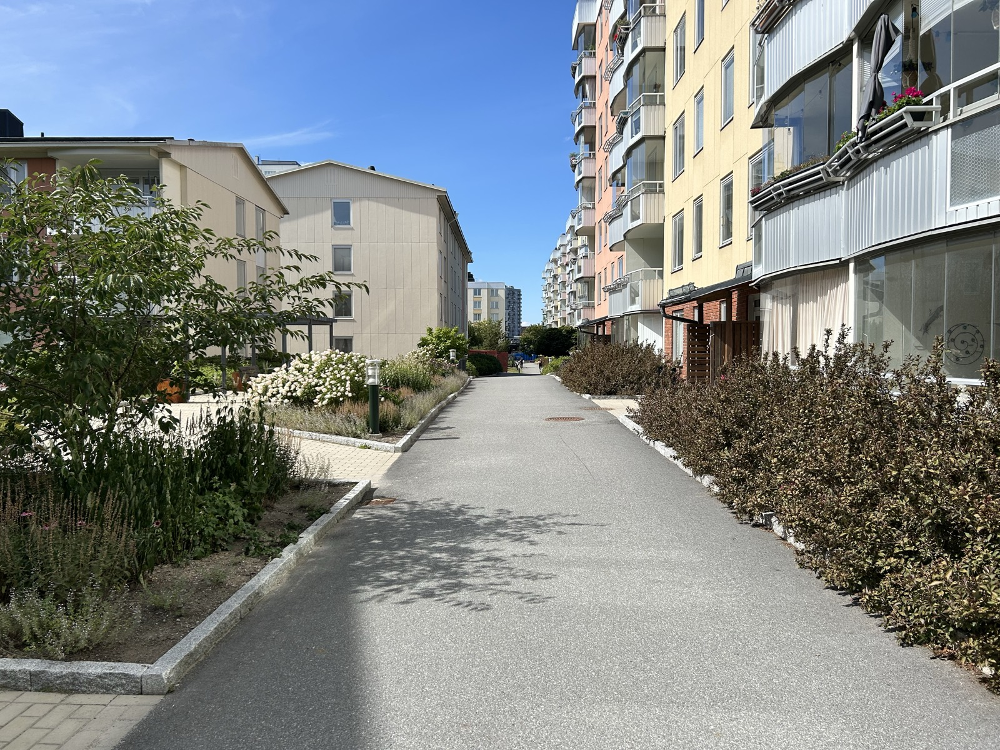
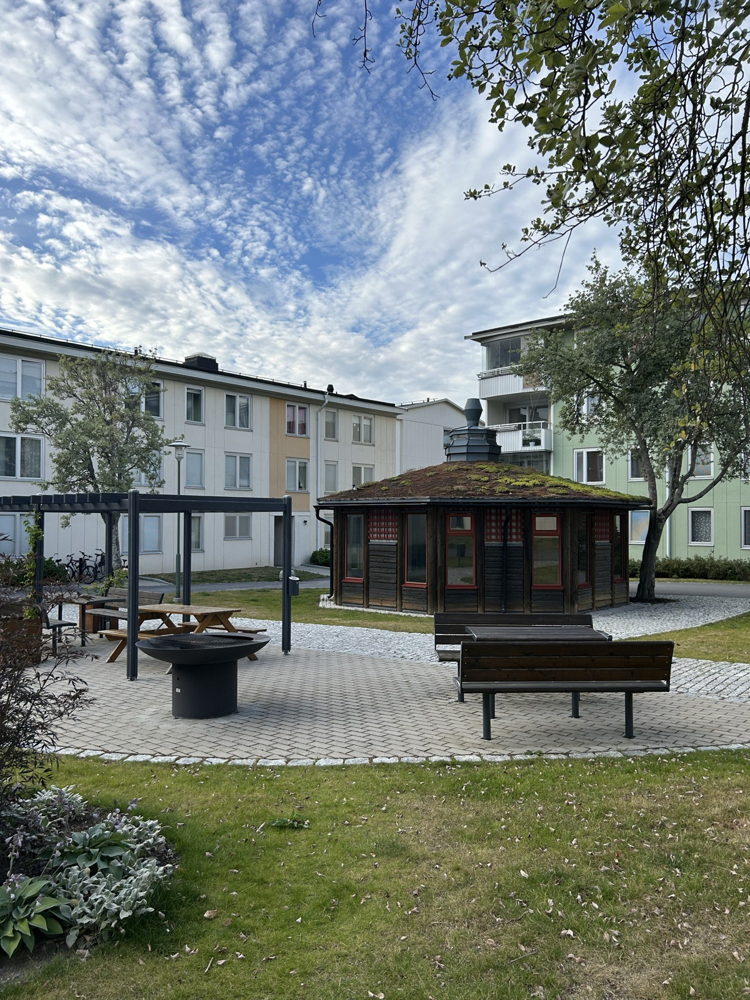
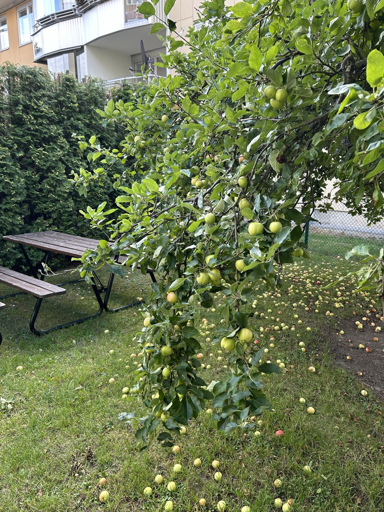
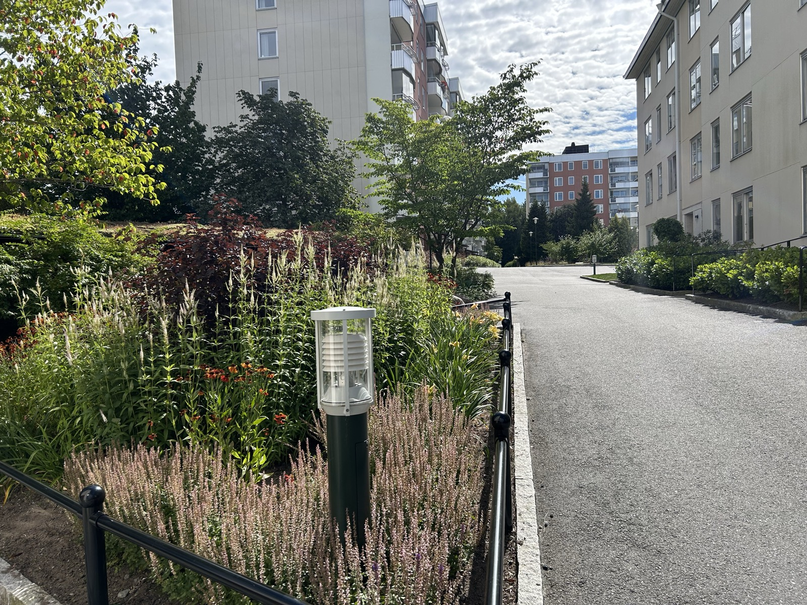
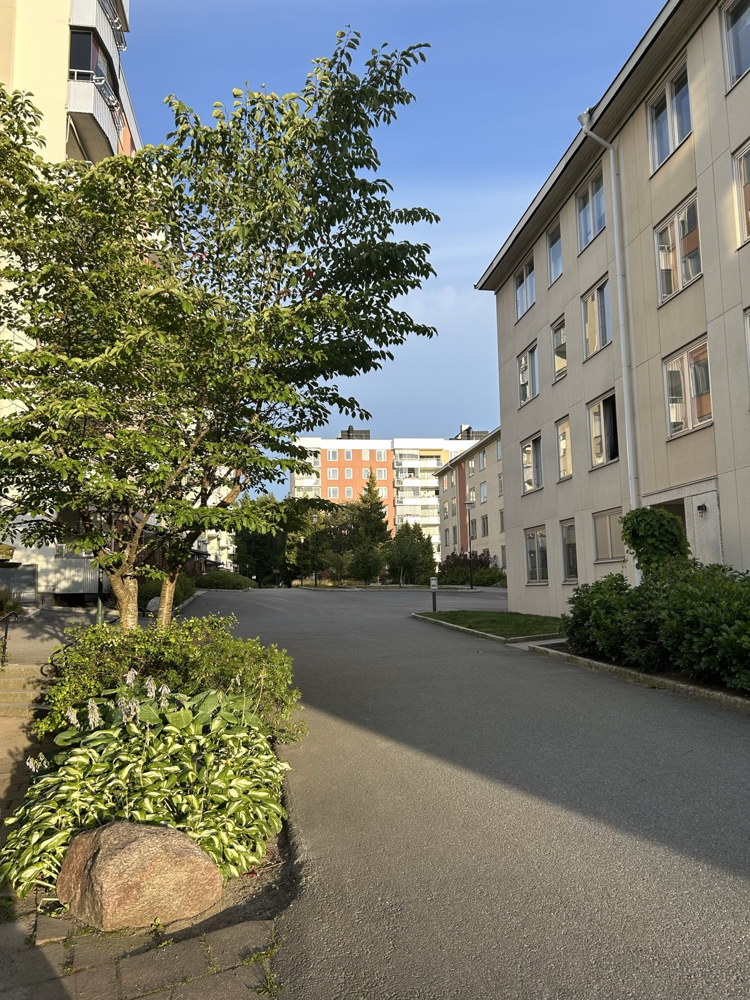
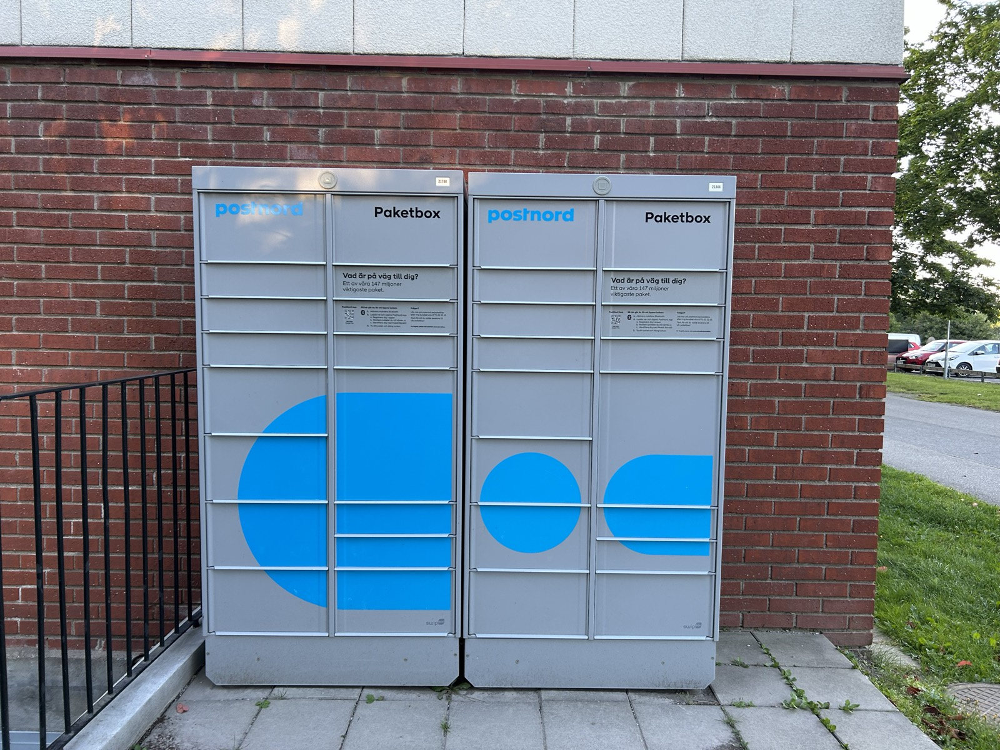

{kind=link}
{kind=link}
{kind=link}
{kind=link}
Loppis i området
En gång om året håller de boende loppis inne i området, på de gemensamma ytorna mellan husen. Loppisen ordnas av grannarna själva. År 2026 hålls den i september.

604 lägenheter i sjutton låghus och sju höghus vid Myggdalsvägen i Bollmora, på 116 000 kvadratmeter egen mark.
Gångvägarna mellan husen, sommaren 2025.
Det här är ingen officiell sida. Föreningens officiella webbplats är sjotungan.se (öppnas i ny flik), som styrelsen ansvarar för. Den här sidan är skapad och underhålls av aktiva medlemmar i föreningen.
De 24 husen står på 116 000 kvadratmeter mark, och det mesta av den är gård. Det går inga gator mellan husen, så ytorna däremellan är till för dem som bor här. Innergårdarna byggdes om 2021–2023.




Det mesta av det här står varken i annonsen eller i årsredovisningen. Allt ingår i avgiften, utom det som står med en kostnad.
Nästan allt på listan ovan finns för att föreningen är stor. Ett gym, en bastu, en föreningslokal, sex tvättstugor, tio grillplatser och en borrmaskin att låna kostar nästan ingenting per hushåll när 604 lägenheter delar på dem. I en förening med fyrtio lägenheter går de inte att ha alls.
Samma sak gäller marken. De 116 000 kvadratmeterna motsvarar 192 kvadratmeter per lägenhet – drygt dubbla bostadsytan – och där ryms lekplatser, fotbollsplan, hundrastgård, boulebana och gårdar utan en enda gata emellan. Parkeringen hyrs ut till självkostnad, och det finns nästan en plats per lägenhet.
Det förklarar också vad årsavgiften innehåller. Värme, vatten, bredband och TV ingår, liksom bostadsrättstillägget i försäkringen, och ovanpå det driften av allt det gemensamma. Avgiften ska jämföras mot vad den täcker, inte mot en förening där det mesta av det här tillkommer separat.
Till det hör att föreningen äger marken. Det finns ingen tomträttsavgäld som kan skrivas upp vid nästa omförhandling – en post som annars kan flytta avgiften rejält i föreningar som arrenderar sin mark av kommunen.
Det mesta i området berör bara en del av dem som bor här. Välj det som gäller dig.
Fyra lekplatser på bilfria gårdar, fotbollsplan och isbana, förskola granne med området.
Lekplatser, gårdar och skolor287 p-platser och 285 garage. Bilplats från 250 kronor i månaden, laddplatser i garaget sedan 2023.
Platser, garage och laddningCykelrum i husen och ett långtidsförråd, med cykelvägar mot Tyresö centrum och vidare in mot stan.
Cykelrum och cykelvägarEgen hundrastgård i området, kommunens större rastgård i Wättinge, och en WhatsApp-grupp för hundägarna.
Rastgård och reglerGym i området för 50 kronor i månaden, bastu, utegym och boulebana – utan att lämna kvarteret.
Gym, bastu och utegymDirektbuss in till city på morgonen, 33 minuter utan byte – och skogen börjar där gårdarna slutar.
Kommunikationer och närområdetEn del av det som händer i området ordnas av de boende själva, vid sidan av det föreningen sköter.
En gång om året håller de boende loppis inne i området, på de gemensamma ytorna mellan husen. Loppisen ordnas av grannarna själva. År 2026 hålls den i september.
En gång om året går grannarna en skräpplockarpromenad tillsammans och plockar upp skräpet på gårdarna och ytorna mellan husen. Den är frivillig och ordnas av de boende, inte av föreningen.
Några gånger om året samlas grannarna till grillfredag, oftast vid grillplatsen vid Myggdalsvägen 46 – den under pergolan, med bänkbord och bänkar i skuggan under taket.
De boende håller kontakt i egna grupper och konton på nätet. Inget av dem är föreningens, och styrelsen står inte bakom innehållet i något av dem.
Sådant som hör till boendet oavsett vem man är.
Sex tvättstugor i området. Tre ligger i källarplan – vid Myggdalsvägen 20, 64 och 98 – och tre i egna hus vid Myggdalsvägen 26, 52 och 74.
Källarstugorna är öppna 07–22 på vardagar och 10–19 på lördagar och söndagar. De fristående husen är öppna dygnet runt. Vid var och en av de tre källarstugorna finns också en grovtvättstuga och en snabbtvättstuga som inte behöver bokas. Maskinerna vid Myggdalsvägen 20 och 64 doserar tvättmedlet själva.
Åtta miljöhus ligger utspridda i området, med sortering för färgat och ofärgat glas, metall, plast och batterier. Matavfall lämnas i fyra kärl längs lokalgatan sedan insamlingen började i juni 2023.
Tre grovsophus, öppna 06–19, tar emot tidningar, wellpapp, elektronik, ljuskällor och grovsopor.
Postnords paketbox står vid en husvägg inne i området. Paket kan levereras hit, så den som väntar på en beställning hämtar den utan att lämna området.
Boxen är två skåp bredvid varandra, utomhus på den stensatta ytan intill väggen, med fack i flera storlekar. Luckan öppnas med Postnords app i mobilen. Visa på karta (öppnas i ny flik).

Den som behöver borra i väggen lånar föreningens borrmaskin i stället för att köpa en egen. Lånetiden är en vecka.
Bilden är hämtad från 757brick.com (öppnas i ny flik) och är inte föreningens material.
Bredband och TV ingår i årsavgiften, och den inkommande fiberanslutningen uppgraderades 2021. Bredbandet levereras av Telenor med 250/250 Mbit/s sedan den 1 augusti 2021, med uttaget i hallen. TV:n kommer från en annan leverantör: Tele2, tidigare Com Hem, står för det digitala grundutbudet på 16 kanaler. Föreningens A–Ö (öppnas i ny flik) har detaljerna.
Föreningen bytte lås och installerade kameraövervakning 2022. Det elektroniska låssystemet sattes in 2018, källardörrarna byttes 2021 och belysningen i allmänna utrymmen är sensorstyrd LED sedan samma år.
Föreningen har rustat upp grillplatserna på de gemensamma ytorna mellan husen. De är till för alla som bor här.
De ligger på var sin gård, från Myggdalsvägen 16 i väster till 108 och 114 i söder, de flesta med bänkbord och flera under pergola.
Ekonomin är sällan skälet att välja en förening, men den ska kunna vara skälet att låta bli. Det är den inte här. Uppgifterna kommer ur årsredovisningen för 2025: föreningen är en äkta bostadsrättsförening, äger marken den står på och redovisade ett resultat på +4,7 miljoner kronor efter två år med underskott.
{kind=link}
{kind=link}